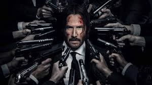
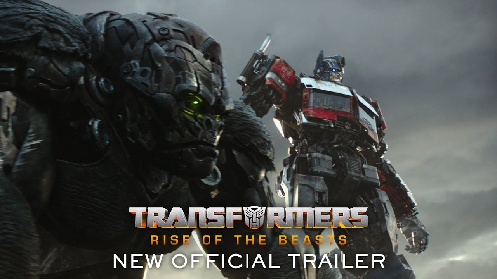

Filmes Online
O Protetor 1
O ex-agente secreto Robert McCall acredita que seu passado ficou para trás e tenta viver uma nova vida. Ele conhece Alina, uma jovem que está sob poder de uma quadrilha russa, e simplesmente não consegue ignorá-la. Munido de suas extraordinárias habilidades, ele ressurge como um verdadeiro anjo vingador. Longe da aposentadoria e com um novo desejo de fazer justiça, McCall decide ajudar quem foi brutalizado e oprimido.

- Lançamento:
- Direção:
- Elenco
Jonh Wick - De Volta ao Jogo
John Wick é um lendário assassino de aluguel aposentado, lidando com o luto após perder o grande amor de sua vida. Quando um gângster invade sua casa, mata seu cachorro e rouba seu carro, ele é forçado a voltar à ativa e inicia sua vingança.
- Lançamento:
- Direção:
- Elenco:
Transformers Rise of The Beasts
Uma nova ameaça capaz de destruir todo o planeta surge fazendo com que Optimus Prime e os Autobots se unam a uma poderosa facção de Transformers conhecida como Maximals para salvar a Terra.
- Lançamento:
- Direção:
- Elenco: